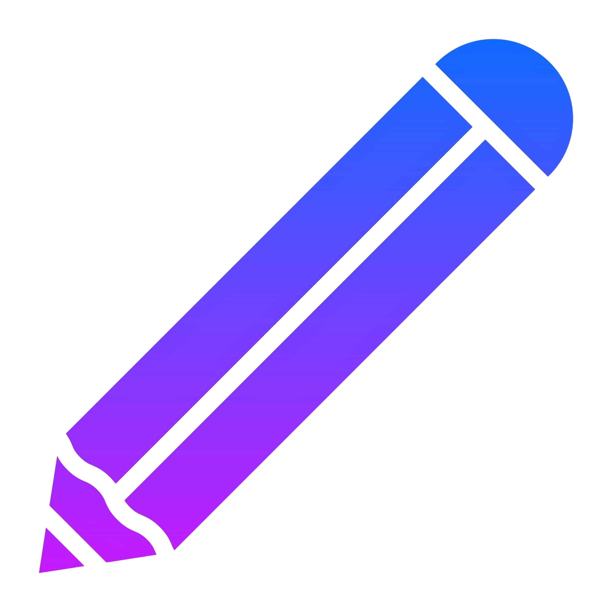

$def with (tutor, ninos)
<!DOCTYPE html>
<html lang="es">
<head>
    <!-- Esto le dice al navegador qué tipo de caracteres usar (acentos, ñ, etc.) -->
    <meta charset="UTF-8">
    <!-- El título que aparece en la pestaña del navegador -->
    <title>Perfil Administrador - Adios al Silencio</title>
    <style>
        /* Esto es para que todo empiece sin espacios ni márgenes raros */
        * {
            margin: 0;  /* Sin espacios por fuera */
            padding: 0;  /* Sin espacios por dentro */
            box-sizing: border-box;  /* Que todo se calcule bien */
        }

        /* Así se ve toda la página */
        body {
            font-family: Arial, sans-serif;  /* Letra normal y fácil de leer */
            background: linear-gradient(180deg, #4169E1 0%, #1E3A8A 50%, #4169E1 100%);  /* Fondo azul que cambia de tono */
            min-height: 100vh;  /* Que ocupe toda la pantalla */
            padding: 20px;  /* Un poquito de espacio en los bordes */
            position: relative;  /* Para poder poner el botón de cerrar donde queramos */
        }

        /* El botón de cerrar que está arriba a la derecha */
        .close-button {
            position: absolute;  /* Se queda fijo en su lugar */
            top: 30px;  /* A 30 pixeles desde arriba */
            right: 30px;  /* A 30 pixeles desde la derecha */
            width: 60px;  /* Ancho del botón */
            height: 60px;  /* Alto del botón */
            cursor: pointer;  /* Manita cuando pasas el mouse */
            transition: all 0.3s ease;  /* Animación suave cuando cambia */
            display: flex;  /* Para centrar la imagen */
            align-items: center;  /* Centrar vertical */
            justify-content: center;  /* Centrar horizontal */
        }

        /* Cuando pasas el mouse por el botón de cerrar */
        .close-button:hover {
            transform: scale(1.1);  /* Se hace un poquito más grande */
        }

        /* La imagen del botón de cerrar */
        .close-button img {
            width: 100%;  /* Que ocupe todo el espacio del botón */
            height: 100%;  /* Mismo alto que el botón */
            filter: drop-shadow(0 4px 10px rgba(0, 0, 0, 0.3));  /* Sombra bonita */
            transition: all 0.3s ease;  /* Animación suave */
        }

        /* Cuando pasas el mouse, la imagen tiene más sombra */
        .close-button:hover img {
            filter: drop-shadow(0 6px 15px rgba(0, 0, 0, 0.5));  /* Sombra más fuerte */
        }

        /* La caja principal que contiene todo */
        .container {
            max-width: 1000px;  /* Ancho máximo */
            margin: 0 auto;  /* Centrado en la página */
            padding-top: 50px;  /* Espacio arriba */
        }

        /* La parte de arriba del perfil donde sale la información */
        .profile-header {
            background: rgba(255, 255, 255, 0.15);  /* Fondo blanquito transparente */
            backdrop-filter: blur(10px);  /* Efecto borroso bonito */
            border-radius: 25px;  /* Esquinas redonditas */
            padding: 40px;  /* Espacio adentro */
            margin-bottom: 30px;  /* Espacio abajo */
            text-align: center;  /* Texto centrado */
            box-shadow: 0 8px 32px rgba(0, 0, 0, 0.1);  /* Sombra suave */
            border: 1px solid rgba(255, 255, 255, 0.2);  /* Borde transparente */
        }

        /* La imagen redonda del perfil */
        .profile-avatar {
            width: 120px;  /* Ancho fijo */
            height: 120px;  /* Alto fijo */
            border-radius: 50%;  /* Para que sea redonda */
            margin: 0 auto 20px;  /* Centrada y con espacio abajo */
            animation: float 3s ease-in-out infinite;  /* Animación de flotar */
            filter: drop-shadow(0 8px 16px rgba(0, 0, 0, 0.2));  /* Sombra bonita */
        }

        /* La imagen que está dentro del círculo */
        .profile-avatar img {
            width: 100%;  /* Que ocupe todo el círculo */
            height: 100%;  /* Mismo alto */
            border-radius: 50%;  /* Redonda también */
            object-fit: cover;  /* Para que se vea bien sin deformarse */
        }

        /* El nombre del administrador */
        .profile-name {
            color: white;  /* Texto blanco */
            font-size: 2.5rem;  /* Texto grande */
            font-weight: bold;  /* En negritas */
            margin-bottom: 10px;  /* Espacio abajo */
            text-shadow: 2px 2px 4px rgba(0, 0, 0, 0.3);  /* Sombra del texto */
        }

        /* El rol que dice "Administrador" */
        .profile-role {
            color: #E0F6FF;  /* Azul clarito */
            font-size: 1.4rem;  /* Texto mediano */
            margin-bottom: 20px;  /* Espacio abajo */
            text-shadow: 1px 1px 2px rgba(0, 0, 0, 0.3);  /* Sombra del texto */
        }

        /* El email del administrador */
        .profile-email {
            color: white;  /* Texto blanco */
            font-size: 1.1rem;  /* Texto normal */
            opacity: 0.9;  /* Un poquito transparente */
            text-shadow: 1px 1px 2px rgba(0, 0, 0, 0.3);  /* Sombra del texto */
        }

        /* Las cajas donde aparece la información */
        .profile-sections {
            display: grid;  /* Para acomodar en cuadrícula */
            grid-template-columns: repeat(auto-fit, minmax(300px, 1fr));  /* Columnas que se ajusten */
            gap: 25px;  /* Espacio entre cajas */
            margin-bottom: 30px;  /* Espacio abajo */
        }

        /* Cada caja de información */
        .profile-section {
            background: rgba(255, 255, 255, 0.15);  /* Fondo blanquito transparente */
            backdrop-filter: blur(10px);  /* Efecto borroso bonito */
            border-radius: 20px;  /* Esquinas redonditas */
            padding: 30px;  /* Espacio adentro */
            box-shadow: 0 8px 32px rgba(0, 0, 0, 0.1);  /* Sombra suave */
            border: 1px solid rgba(255, 255, 255, 0.2);  /* Borde transparente */
            transition: all 0.3s ease;  /* Animación suave */
        }

        /* Cuando pasas el mouse por una caja */
        .profile-section:hover {
            transform: translateY(-5px);  /* Se mueve hacia arriba */
            box-shadow: 0 12px 40px rgba(0, 0, 0, 0.15);  /* Sombra más grande */
        }

        /* El título de cada caja */
        .section-title {
            color: white;  /* Texto blanco */
            font-size: 1.6rem;  /* Texto grande */
            font-weight: bold;  /* En negritas */
            margin-bottom: 20px;  /* Espacio abajo */
            text-shadow: 2px 2px 4px rgba(0, 0, 0, 0.3);  /* Sombra del texto */
            display: flex;  /* Para acomodar el ícono y texto */
            align-items: center;  /* Centrar vertical */
            gap: 10px;  /* Espacio entre ícono y texto */
        }

        /* Los íconos pequeños de cada sección */
        .section-icon {
            width: 30px;  /* Ancho fijo */
            height: 30px;  /* Alto fijo */
            filter: invert(1);  /* Para que se vean blancos */
        }

        /* Cada pedacito de información */
        .info-item {
            margin-bottom: 15px;  /* Espacio abajo */
            color: white;  /* Texto blanco */
            font-size: 1.1rem;  /* Texto normal */
        }

        /* Las etiquetas que dicen qué tipo de información es */
        .info-label {
            font-weight: bold;  /* En negritas */
            color: #E0F6FF;  /* Azul clarito */
            margin-bottom: 5px;  /* Espacio abajo */
        }

        /* Los valores de la información */
        .info-value {
            color: white;  /* Texto blanco */
            opacity: 0.9;  /* Un poquito transparente */
        }

        /* La cuadrícula donde van las estadísticas */
        .stats-grid {
            display: grid;  /* Para acomodar en cuadrícula */
            grid-template-columns: repeat(auto-fit, minmax(120px, 1fr));  /* Columnas que se ajusten */
            gap: 15px;  /* Espacio entre estadísticas */
        }

        /* Cada estadística individual */
        .stat-item {
            text-align: center;  /* Texto centrado */
            padding: 15px;  /* Espacio adentro */
            background: rgba(255, 255, 255, 0.1);  /* Fondo transparente */
            border-radius: 15px;  /* Esquinas redonditas */
            border: 1px solid rgba(255, 255, 255, 0.2);  /* Borde transparente */
        }

        /* Los números grandes de las estadísticas */
        .stat-number {
            font-size: 2rem;  /* Número grande */
            font-weight: bold;  /* En negritas */
            color: white;  /* Texto blanco */
            margin-bottom: 5px;  /* Espacio abajo */
            text-shadow: 2px 2px 4px rgba(0, 0, 0, 0.3);  /* Sombra del texto */
        }

        /* Las etiquetas de las estadísticas */
        .stat-label {
            font-size: 0.9rem;  /* Texto pequeñito */
            color: #E0F6FF;  /* Azul clarito */
            text-shadow: 1px 1px 2px rgba(0, 0, 0, 0.3);  /* Sombra del texto */
        }

        /* La lista donde aparecen los niños registrados */
        .children-list {
            display: flex;  /* Para acomodar las cosas */
            flex-direction: column;  /* Todo en columna */
            gap: 15px;  /* Espacio entre niños */
        }

        /* Cada niño individual */
        .child-item {
            background: rgba(255, 255, 255, 0.1);  /* Fondo transparente */
            border-radius: 15px;  /* Esquinas redonditas */
            padding: 20px;  /* Espacio adentro */
            border: 1px solid rgba(255, 255, 255, 0.2);  /* Borde transparente */
            display: flex;  /* Para acomodar avatar y información */
            align-items: center;  /* Centrar vertical */
            gap: 15px;  /* Espacio entre avatar e información */
        }

        /* El círculo con la inicial del niño */
        .child-avatar {
            width: 50px;  /* Ancho fijo */
            height: 50px;  /* Alto fijo */
            border-radius: 50%;  /* Para que sea redondo */
            background: linear-gradient(135deg, #FF1493, #FF69B4);  /* Fondo rosa que cambia */
            display: flex;  /* Para centrar la letra */
            align-items: center;  /* Centrar vertical */
            justify-content: center;  /* Centrar horizontal */
            color: white;  /* Letra blanca */
            font-weight: bold;  /* En negritas */
            font-size: 1.2rem;  /* Letra un poquito grande */
        }

        /* La información del niño */
        .child-info {
            flex: 1;  /* Que ocupe el espacio disponible */
        }

        /* El nombre del niño */
        .child-name {
            color: white;  /* Texto blanco */
            font-weight: bold;  /* En negritas */
            margin-bottom: 5px;  /* Espacio abajo */
        }

        /* El progreso del niño */
        .child-progress {
            color: #E0F6FF;  /* Azul clarito */
            font-size: 0.9rem;  /* Texto pequeñito */
        }

        /* Botones de acción */
        .action-buttons {
            display: flex;
            gap: 20px;
            justify-content: center;
            margin-top: 30px;
        }

        .action-button {
            background: linear-gradient(135deg, #FF1493, #FF69B4);
            color: white;
            border: none;
            padding: 15px 30px;
            border-radius: 50px;
            font-size: 1.1rem;
            font-weight: bold;
            cursor: pointer;
            box-shadow: 0 6px 20px rgba(255, 20, 147, 0.4);
            transition: all 0.3s ease;
            text-decoration: none;
            display: inline-block;
        }

        .action-button:hover {
            background: linear-gradient(135deg, #C71585, #FF1493);
            transform: translateY(-3px);
            box-shadow: 0 8px 25px rgba(255, 20, 147, 0.6);
        }

        .action-button.secondary {
            background: linear-gradient(135deg, #32CD32, #00FF00);
            box-shadow: 0 6px 20px rgba(50, 205, 50, 0.4);
        }

        .action-button.secondary:hover {
            background: linear-gradient(135deg, #228B22, #32CD32);
            box-shadow: 0 8px 25px rgba(50, 205, 50, 0.6);
        }

        /* Animaciones */
        @keyframes float {
            0%, 100% {
                transform: translateY(0px);
            }
            50% {
                transform: translateY(-10px);
            }
        }

        /* Responsivo */
    </style>
</head>
<body>


    <div class="container">
        <!-- Header del perfil -->
        <div class="profile-header">
            <div class="profile-avatar">
                
            </div>
            <div class="profile-name" id="profile-name">$tutor['nombres'] $tutor['apellidos']</div>
            <div class="profile-role" id="profile-role">Tutor</div>
            <div class="profile-email" id="profile-email">$tutor['correo']</div>
        </div>

        <!-- Secciones del perfil -->
        <div class="profile-sections">
            <!-- Información personal -->
            <div class="profile-section">
                <!-- Título de la sección con botón para editar -->
                <h3 class="section-title">
                    Información Personal
                    <!-- Botón para editar el perfil -->
                    
                </h3>
                <!-- Nombre completo del tutor -->
                <div class="info-item">
                    <div class="info-label">Nombre completo:</div>
                    <div class="info-value" id="nombre-completo">$tutor['nombres'] $tutor['apellidos']</div>
                </div>
                <!-- Su correo electrónico -->
                <div class="info-item">
                    <div class="info-label">Email:</div>
                    <div class="info-value" id="email-info">$tutor['correo']</div>
                </div>
                <!-- Tipo de cuenta que tiene -->
                <div class="info-item">
                    <div class="info-label">Tipo de cuenta:</div>
                    <div class="info-value" id="tipo-cuenta">Tutor</div>
                </div>
            </div>

            <!-- Sección donde aparecen todos los niños registrados -->
            <div class="profile-section">
                <h3 class="section-title">
                    Niños Registrados
                </h3>
                <!-- Lista de todos los niños -->
                <div class="children-list" id="children-list">
                    $if ninos:
                        $for nino in ninos:
                            <!-- Cada niño se muestra con su información -->
                            <div class="child-item">
                                <!-- Avatar con la primera letra del nombre -->
                                <div class="child-avatar">$nino['nombres'][0].upper()</div>
                                <!-- Información del niño -->
                                <div class="child-info">
                                    <div class="child-name">$nino['nombres'] $nino['apellidos']</div>
                                    <div class="child-progress">Género: $nino['genero']</div>
                                </div>
                            </div>
                    $else:
                        <!-- Si no hay niños registrados, mostramos este mensaje -->
                        <div style="text-align: center; padding: 20px; color: rgba(255,255,255,0.7);">
                            No hay niños registrados aún
                        </div>
                </div>
            </div>
            </div>
        </div>

        <!-- Botones de acción: registrar niño y cerrar sesión -->
        <div class="action-buttons">
            <button class="action-button" onclick="window.location.href='/registrar_chiquillo'">
                Registrar nuevo niño
            </button>
            <button class="action-button secondary" onclick="window.location.href='/cerrar_sesion'">
                Cerrar sesión
            </button>
        </div>
    </div>

    <script>
        // Esta función toma los parámetros que vienen en la dirección web
        function getUrlParams() {
            const urlParams = new URLSearchParams(window.location.search);
            return {
                tutor_id: urlParams.get('tutor_id'),
                token: urlParams.get('token')
            };
        }

        // Para cuando queremos editar el perfil
        function editarPerfil() {
            const params = getUrlParams();
            
            // Si tenemos los datos necesarios en la dirección web
            if (params.tutor_id && params.token) {
                // Vamos a la página de editar con esos datos
                window.location.href = '/editar_perfil?tutor_id=' + params.tutor_id + '&token=' + params.token;
            } else {
                // Si no, intentamos ir sin esos datos
                window.location.href = '/editar_perfil';
            }
        }
    </script>

</body>
</html>